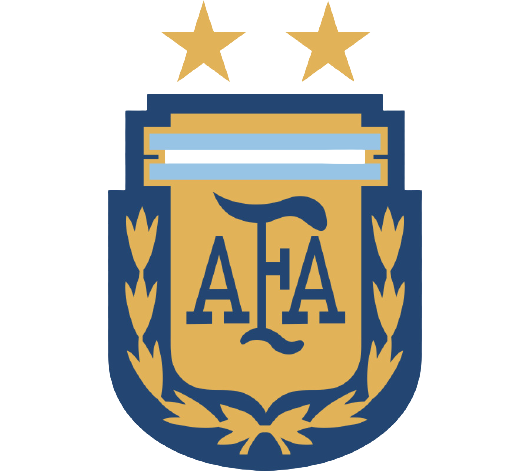
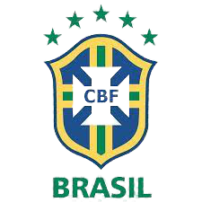
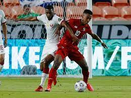
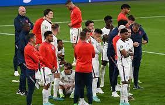
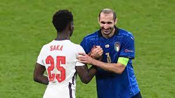

Leonel Messi
Leonel Messi is currently a free agent, having played all his professional career for La Liga club Barcelona, whom he captained from 2018 to 2021.

Nymar JR
Neymar came into prominence at Santos, where he made his professional debut aged 17. He helped the club win two successive Campeonato.

Cristiano Ronaldo
Cristiano Ronaldo dos Santos Aveiro was born in São Pedro, Funchal, on the Portuguese island of Madeira, and grew up in Santo António, Funchal.

Paulo Dybala
Paulo Exequiel Dybala is an Argentine professional footballer who plays as a forward for Serie A club Juventus and the Argentina national team.

Mesut Ozil
Mesut Özilis a German professional footballer who plays as an attacking midfielder for Süper Lig club Fenerbahçe. Nicknamed "The Assist King"

Mauro Icardi
Mauro Emanuel Icardi is an Argentine professional footballer who plays as a striker for Ligue 1 club Paris Saint-Germain and the Argentina national team.

Di Maria
Ángel Fabián Di María is an Argentine professional footballer who plays for Ligue 1 club Paris Saint-Germain and the Argentina national team.

Kylian Mbappé
Kylian Mbappé Lottin is a French professional footballer who plays as a forward for Ligue 1 club Paris Saint-Germain and the France national team.

Mohamed Salah
Mohamed Salah Hamed Mahrous Ghal is an Egyptian professional footballer who plays as a forward for Premier League and captains the Egypt national team.

Harry Kane
Harry Edward Kane is an English professional footballer who plays as a striker for Premier League club.Regarded as one of the best strikers in the world.

Kevin De Bruyne
Kevin De Bruyneis a Belgian professional footballer who plays as a midfielder for Premier League club, where he is vice-captain, and the Belgium national team.

Philippe Coutinho
Philippe Coutinho Correiais a Brazilian professional footballer who plays as an attacking or winger for Spanish club and the Brazil national team.
LATEST MATCH RESULT

Argentina
Leonal Messi: 2 goals
De mariya: 1 goal

Brazil
Neymar JR: 1 goal
jeson Silvar: 1 goal
Latest News
Copa Championship

'Shocking' Wembley scenes prompt DCMS Committee chair to demand answers
Ticketless supporters gained entry to Wembley ahead of Sunday's Euro 2020 final; clashes with stewards......

Manchester United forward to undergo shoulder surgery and could miss
Marcus Rashford was part of the England squad that reached the final of Euro 2020; forward missed his penalty.....

Hammers in talks over Alphonse Areola deal with Paris Saint-Germain
Hammers targeting loan deal for Alphonse Areola,the move permanent; PSG 'keeper spent the 2020/21......
All Highlights Copa America 2021
Amet minim mollit non deserunt ullamco est sit aliqua dolor do amet sint. Velit officia consequat duis enim velit mollit. Exercitation veniam consequat sunt nostrud amet.
watch live